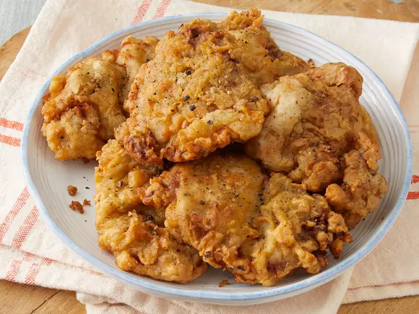

Fried Venison Backstrap

Description
Tender venison backstrap is sliced thinly before being breaded and fried to make a savory crispy crust.
Ingredients
- 1 (2 pound) venison backstrap, cut into 1/4 inch thick slices
- 2 ½ cups milk, divided
- 2 tablespoons hot pepper sauce
- 3 cups vegetable oil for frying
- 3 cups all-purpose flour
- 2 tablespoons salt
- 1 tablespoon ground black pepper
- 2 eggs
Steps
- Place venison slices into a shallow bowl and pour in 2 cups milk and hot sauce. Stir to coat, then cover and marinate for 1 hour.
- Heat vegetable oil in an electric fryer or skillet to 325 degrees F (165 degrees C).
- Set up a dredging station: Stir together flour, salt, and pepper in a shallow bowl. Whisk eggs and remaining 1/2 cup milk together in a separate shallow
bowl.
- Dip venison slices into the flour mixture, then into the egg mixture, then back into the flour mixture. Shake off excess flour.
- Fry in the hot oil until lightly browned on each side, about 3 minutes. Remove with tongs and drain briefly on paper towels before serving.